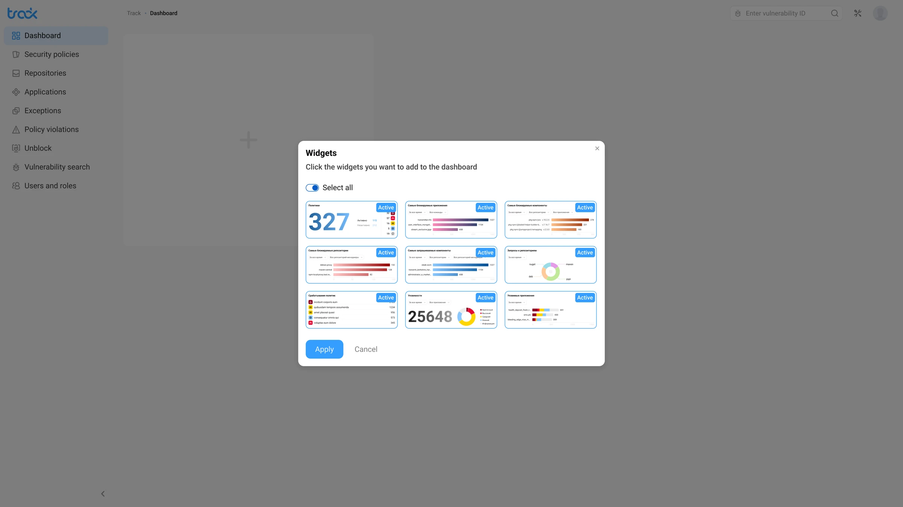
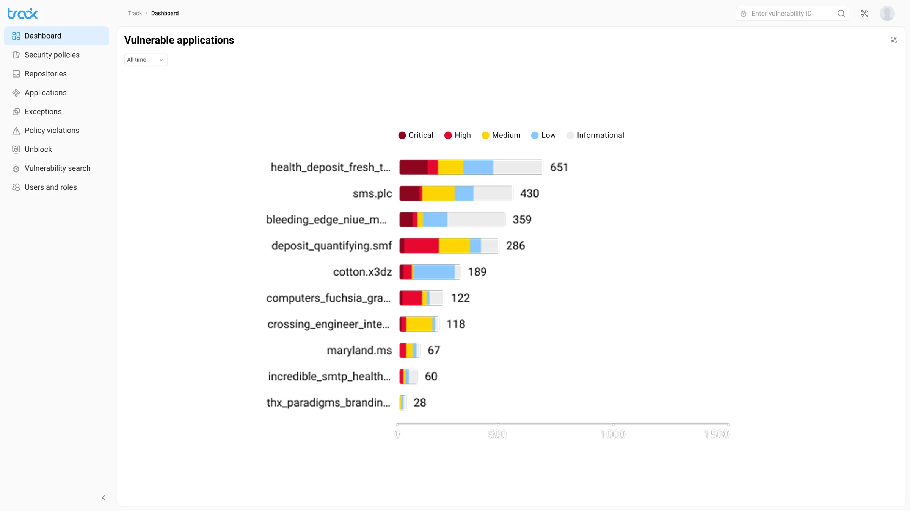

Track: дашборд безопасностиTrack: security dashboard
Виджетный security-дашборд: каждая роль собирает свой обзор и уходит в детали, не теряя общей картины.A widget-based security dashboard: each role assembles its own overview and drills into details without losing the big picture.
Context
Security-команды работали с разными первыми вопросами:Security teams started from different first questions:
- DevOps следил за репозиториями,DevOps watched the repositories,
- AppSec-аналитик — за severity и приложениямиthe AppSec analyst — severity and applications
- менеджер — за политиками и нарушениямиthe manager — policies and violations
Один статичный дашборд не мог обслужить всех: одним ролям он давал шум, другим — слепые зоны, и каждая команда всё равно доставала нужные метрики вручную или шла за ними к соседям.A single static dashboard couldn't serve everyone: it gave noise to some roles and blind spots to others, and each team still pulled the metrics it needed by hand or went to a neighbouring team for them.
Design challenge
Нужно было дать пользователю контроль над обзором, но не превращать настройку в сложный конфигуратор. Empty state должен вести к первому действию, а widget picker объяснять выбор до применения.I had to give users control over their overview without turning setup into a complex configurator. The empty state had to lead to the first action, and the widget picker had to explain the choice before applying it.

Моя рольMy role
Проектировала дашборд от ролевых сценариев до handoff: IA, empty state, widget picker, заполненный dashboard, expanded view и severity-визуализацию. Работала с PM, аналитиками безопасности и разработкой.I designed the dashboard from role-based scenarios to handoff: IA, empty state, widget picker, the populated dashboard, expanded view and severity visualization. I worked with PM, security analysts and engineering.
ЗадачиGoals
- Разложить дашборд по ролевым вопросам, а не по типам графиковOrganize the dashboard around role questions, not chart types
- Спроектировать empty state и widget picker как короткий путь к первому обзоруDesign the empty state and widget picker as a short path to the first overview
- Выстроить populated dashboard: иерархия, размеры виджетов и приоритет данныхBuild the populated dashboard: hierarchy, widget sizes and data priority
- Собрать expanded view и severity-систему для разных типов визуализацииAssemble the expanded view and a severity system for different visualization types
Ключевые решенияKey decisions
Как организовать дашборд: по типам графиков или по ролевым вопросам.How to organize the dashboard: by chart types or by role questions. Выбрала строить обзор вокруг вопросов роли (severity, репозитории, политики), потому что у DevOps, аналитика и менеджера первый вопрос разный. Отбросила витрину графиков «на все случаи»: одним ролям она давала шум, другим — слепые зоны.I chose to build the overview around role questions (severity, repositories, policies), because DevOps, the analyst and the manager each start from a different first question. I rejected an all-purpose gallery of charts: it gave noise to some roles and blind spots to others.
Настройка: полноценный конфигуратор или empty state с widget picker.Setup: a full configurator or an empty state with a widget picker. Выбрала лёгкий picker с превью и Select all — путь от пустого экрана к первому обзору занимает минуту. Отбросила сложный конфигуратор: он превращает старт в отдельную работу и отпугивает часть ролей ещё до первого обзора.I chose a light picker with previews and Select all — the path from an empty screen to the first overview takes a minute. I rejected a complex configurator: it turns the start into a separate job and scares off some roles before their first overview.
Детали: отдельная страница или expanded view на месте.Detail: a separate page or an expanded view in place. Выбрала раскрывать виджет в детальный режим прямо в дашборде, с возвратом в один клик. Отбросила уход на отдельную страницу деталей: пользователь терял контекст общего обзора и «где я нахожусь».I chose to expand a widget into a detailed mode right inside the dashboard, with a one-click return. I rejected moving to a separate details page: the user lost the context of the overview and a sense of where they were.
РешениеSolution
Empty state как точка старта, а не тупик:The empty state as a starting point, not a dead end: пустой экран сразу предлагает действие: добавить виджет. Большая зона с «+» показывает, что здесь появится персональный обзор.the empty screen immediately offers an action — add a widget. A large “+” area shows that a personal overview will appear here.

Widget picker: выбор с пониманием:Widget picker: an informed choice: пикер показывает превью виджетов до подтверждения. Select all ускоряет старт, ручной выбор даёт контроль, active-бейджи показывают текущий набор.the picker shows widget previews before confirmation. Select all speeds up the start, manual selection gives control, and active badges show the current set.

Populated dashboard: единый обзор безопасности:Populated dashboard: a single security overview: обзор собирает severity, уязвимые приложения, заблокированные репозитории и policy triggers. Цветовая система Critical/High/Medium/Low/Informational остаётся единой во всех виджетах.the overview brings together severity, vulnerable applications, blocked repositories and policy triggers. The Critical/High/Medium/Low/Informational color system stays consistent across all widgets.
Expanded view: детали без потери контекста:Expanded view: detail without losing context: виджет раскрывается в детальный режим со stacked bar chart, периодом и hover-state по severity. Вернуться к обзору можно одним кликом.a widget expands into a detailed mode with a stacked bar chart, time period and severity hover states. You can return to the overview in one click.

РезультатOutcome
- ≈ 1 минута собрать персональный обзор под роль≈ 1 minute to assemble a personal overview for your role — empty state и widget picker ведут от пустого экрана к первому обзору без настройки-конфигуратора.— the empty state and widget picker lead from a blank screen to the first overview without a configurator.
- 3 роли — один дашборд:3 roles — one dashboard: DevOps, аналитик и менеджер собирают нужные метрики в одном месте и перестают спорить, чей дашборд «правильный».DevOps, the analyst and the manager assemble the metrics they need in one place and stop arguing over whose dashboard is the “right” one.
- 5 уровней severity в единой системе:5 severity levels in one system: Critical / High / Medium / Low / Informational держат цвет одинаковым во всех виджетах, а новый виджет добавляется, не ломая остальные.Critical / High / Medium / Low / Informational keep colour consistent across every widget, and a new widget is added without breaking the rest.